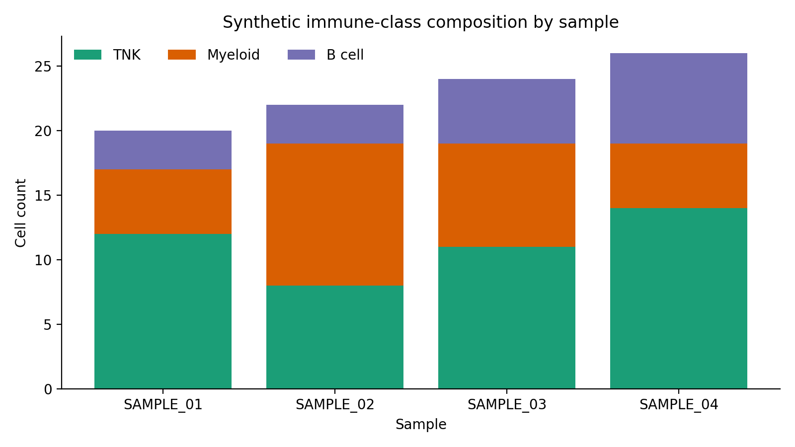

Integration Pipeline¶
--workflow integration
The integration pipeline downloads Seurat objects from LabKey, exports per-sample count matrices, harmonizes genes across species, and trains a scMODAL variational autoencoder to produce a joint multi-species latent embedding with Leiden clustering.
GPU required
This workflow must run on an HPC cluster via -profile slurm. It requires at least one NVIDIA GPU for the SCMODAL_INTEGRATE step. It cannot run on a local Mac or CPU-only Linux host.
The only CPU path is the GitHub Actions smoke-test stub, enabled with --scmodal_use_cpu true together with -stub-run.
Stage-by-stage dataflow¶
flowchart TD
SS["**samplesheet.csv**
sample_id · output_file_id · species"]
INGEST["**INGEST**
(Rdiscvr)
Downloads full Seurat object from LabKey"]
EXPORT_COUNTS["**EXPORT_COUNTS**
(CellMembrane)
Extracts raw counts → 10x-like matrix dir"]
COLLECT["collect()
Gathers all sample count dirs"]
GENE_HARMONIZE["**GENE_HARMONIZE**
(scmodal-cuda)
Ortholog mapping + AnnData per species"]
SCMODAL["**SCMODAL_INTEGRATE**
(scmodal-cuda · GPU)
scMODAL VAE → latent embedding + Leiden clustering"]
OUT_RDS["outputs/ingest/{id}/{id}.rds"]
OUT_COUNTS["outputs/counts/{id}/{id}_counts/
matrix.mtx · features.tsv · barcodes.tsv · obs_meta.csv"]
OUT_HARM["outputs/harmonized/harmonized_outputs/
*_harmonized.h5ad · integration_manifest.csv
shared_genes.csv · ortholog_mapping.csv"]
OUT_MODEL["outputs/scmodal/model_outputs/
latent_clustered.h5ad · ckpt.pth
training_history.csv · run_summary.json"]
SS --> INGEST
INGEST -->|"tuple(meta, .rds)"| OUT_RDS
INGEST -->|"tuple(meta, .rds)"| EXPORT_COUNTS
EXPORT_COUNTS -->|"tuple(meta, counts_dir/)"| OUT_COUNTS
EXPORT_COUNTS -->|"all samples"| COLLECT
COLLECT -->|"[counts_dir/, ...]"| GENE_HARMONIZE
GENE_HARMONIZE --> OUT_HARM
GENE_HARMONIZE -->|"harmonized_dir/"| SCMODAL
SCMODAL --> OUT_MODELInputs¶
Samplesheet¶
Path: --input (default data/samplesheet.csv)
See Data Formats → Samplesheet for the schema. All three columns are required for the full pipeline.
Required parameters¶
| Parameter | Description |
|---|---|
--labkey_base_url |
LabKey server base URL |
--labkey_folder |
LabKey folder path |
--species_order |
Comma-separated species list (default human,macaque,mouse) |
Outputs at each stage¶
INGEST → outputs/ingest/{sample_id}/¶
| File | Description |
|---|---|
{sample_id}.rds |
Full Seurat object (counts + metadata) downloaded from LabKey |
EXPORT_COUNTS → outputs/counts/{sample_id}/{sample_id}_counts/¶
A 10x-like matrix directory (one per sample):
| File | Description |
|---|---|
matrix.mtx |
Sparse count matrix (genes × cells, Market Exchange format) |
features.tsv |
Gene / feature names, one per row |
barcodes.tsv |
Cell barcode identifiers, one per row |
obs_meta.csv |
Cell-level metadata exported from the Seurat object |
GENE_HARMONIZE → outputs/harmonized/harmonized_outputs/¶
| File | Description |
|---|---|
{idx}_{species}_harmonized.h5ad |
One AnnData per species. Cells × shared ortholog genes, log-normalised. |
integration_manifest.csv |
Maps each species file to its integration order index. |
shared_genes.csv |
Shared ortholog gene list used across all species. |
ortholog_mapping.csv |
Full HomoloGene-based ortholog mapping table (all species). |
n_shared.txt |
Count of shared genes (read by SCMODAL_INTEGRATE). |
SCMODAL_INTEGRATE → outputs/scmodal/model_outputs/¶
| File | Description |
|---|---|
latent_clustered.h5ad |
Concatenated AnnData with obsm["X_scmodal"] latent coords, UMAP, and Leiden cluster labels. |
ckpt.pth |
Trained scMODAL model checkpoint (PyTorch). |
training_history.csv |
Per-run summary: n_cells, n_genes, n_latent, training time, device. |
run_summary.json |
JSON summary of integration parameters and results. |
gpu_info.txt |
Output of nvidia-smi captured during the run. |
Synthetic input snapshot¶
The seeded metadata fixture used by docs and CI gives a safe preview of the cell-level composition that flows into harmonization and scMODAL integration.

This plot is derived from the synthetic sample_metadata.csv bundle and is useful for validating that broad immune-class distributions look sensible before the GPU stage.
For the generated code-level reference, see API Reference → Workflows.
Running on HPC¶
For routine SLURM runs, the recommended entrypoint is a copied runs/<name>/run.sh template. The commands below show the repo-root launcher alternative, which is also the easiest way to get a separate pre-pull job ahead of the orchestrator.
# Sync the repo (recommended before each run)
sbatch slurm_sync_repo.sh
# Submit the integration pipeline from a login node so pre-pull runs as its own job first
bash slurm_nextflow.sh \
--workflow integration \
--labkey_base_url https://labkey.example.org \
--labkey_folder /My/Project/Folder
Optionally, sync and launch in one step:
SYNC_REPO_BEFORE_RUN=true bash slurm_nextflow.sh \
--workflow integration \
--labkey_base_url https://labkey.example.org \
--labkey_folder /My/Project/Folder
Container prerequisites: When running on SLURM, Apptainer must be configured before your first run. See Container image pre-pull and SIF cache in the usage guide for graphroot setup, storage details, and all
NXF_APPTAINER_*environment variables.
Resource profile (SLURM)¶
| Step | CPUs | Memory | Wall time | GPU |
|---|---|---|---|---|
| INGEST | 4 | 32 GB | 4 h | — |
| EXPORT_COUNTS | 4 | 32 GB | 4 h | — |
| GENE_HARMONIZE | 4 | 32 GB | 8 h | — |
| SCMODAL_INTEGRATE | 8 | 64 GB | 24 h | 1× (--gres=gpu:1 --qos=gpu) |
Key parameters¶
| Parameter | Default | Description |
|---|---|---|
--scmodal_latent |
20 |
Latent embedding dimensions |
--scmodal_training_steps |
10000 |
VAE training steps |
--scmodal_batch_size |
500 |
Mini-batch size |
--scmodal_neighbors |
30 |
KNN graph neighbours |
--leiden_resolution |
0.5 |
Leiden clustering resolution |
See the full Parameter reference for all options.